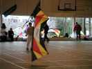

Article published in LUCANE n° 104 (sept 2004). Translated feb 2005.
All reasons we assert to fly kites.... The one and only true reason...

Indoor d'Amiens (13 février 2005)Un très grand gymnase avec 2 terrains !
Une compète animée et un très beau show de Michel Chantren.
| Plan du site | Réd : 11février 2005 |
 The Elastic Bridle
The Elastic BridleArticle published in LUCANE n° 106 (jan 2004). Translated jan 2005.
How to prevent your kite to fly over your head.
Balance influence. Effect of an elastic briddle and How to implement.
| WEBA 2004 (28/29 décembre 2004) | Réd : 3 Janvier 2005 |
Février 2005 : ajout d'un plan du site avec liens vers toutes les pages. Plan accessible avec "P", le dernier bouton ˆ droite du menu.
Janvier 2005 : utilisation de scripts et de styles généraux de type HTML4 et CSS sur tout le site (Validé W3C).
Décembre 2004 : mise en facteur du script d'ouverture des grandes photos, et changement de look des boutons (utilisation de styles HTML4).
Novembre 2004 : Apparition de quelques pages traduites en anglais avec quelques boutons dédiés supplémentaires. (Some english pages appear...).
9 août 04 : gestion des photos agrandies : Elles ne disparaissent plus automatiquement quand on revient à la page initiale (permet de charger une grande photo à petite vitesse pendant qu'on revient lire la page).
15 juin 2004 : tous les plans sont maintenant agrandissables.
28 mars 2004 : gestion des photos agrandies ; ajout page de sous-accueil "Fêtes et Reportages".
Merci de me signaler tout problème :